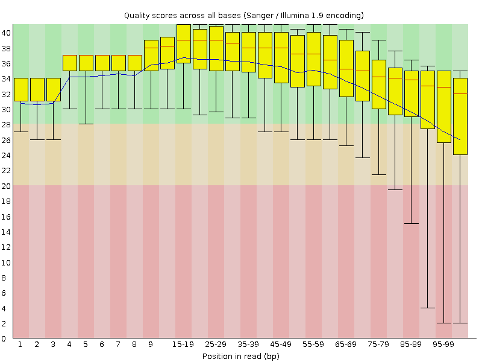
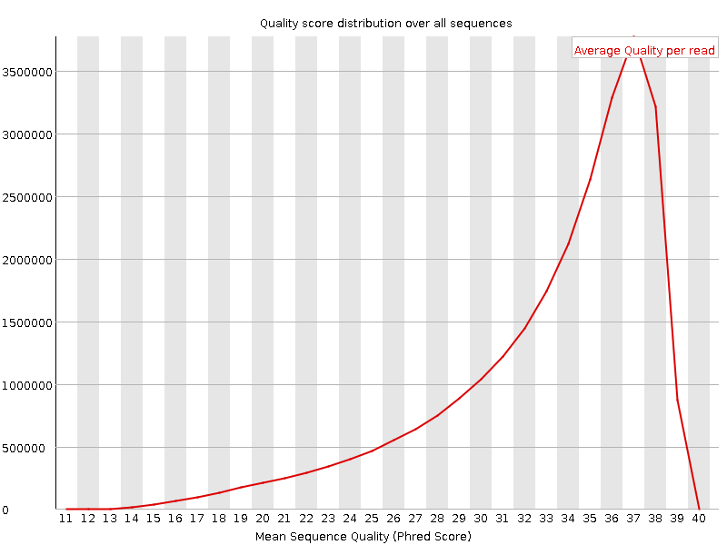
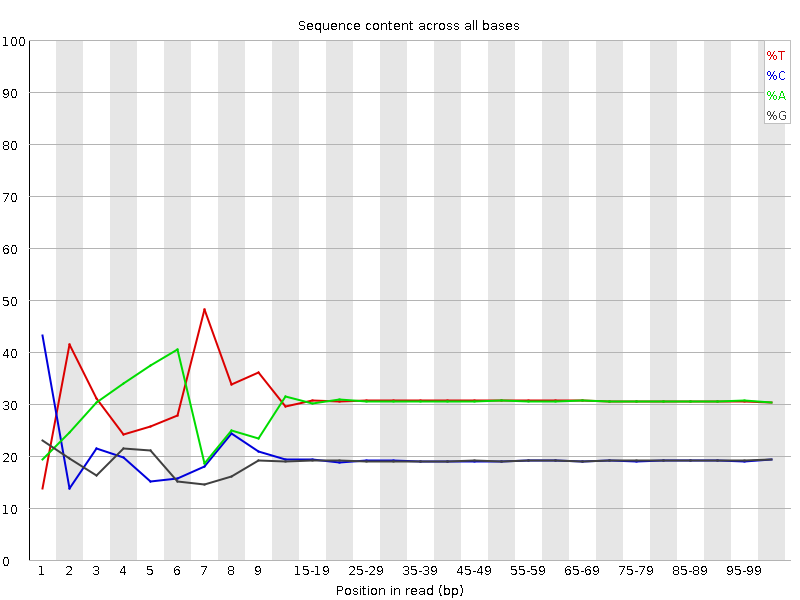
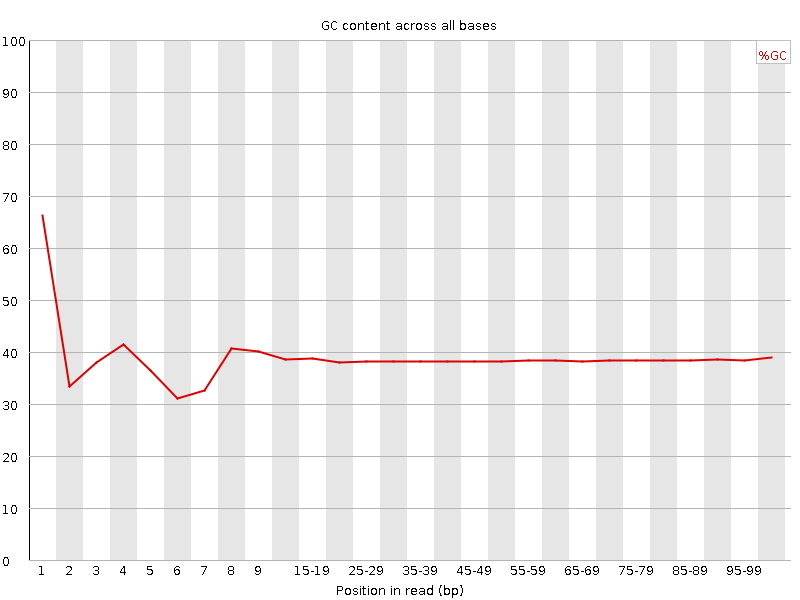
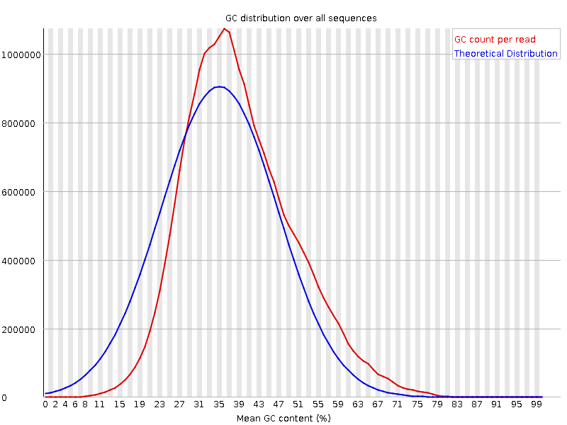
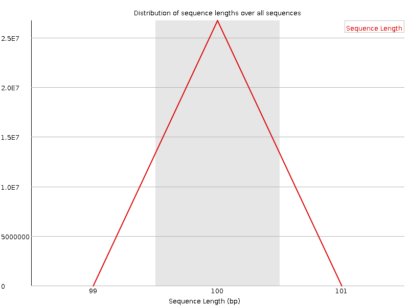
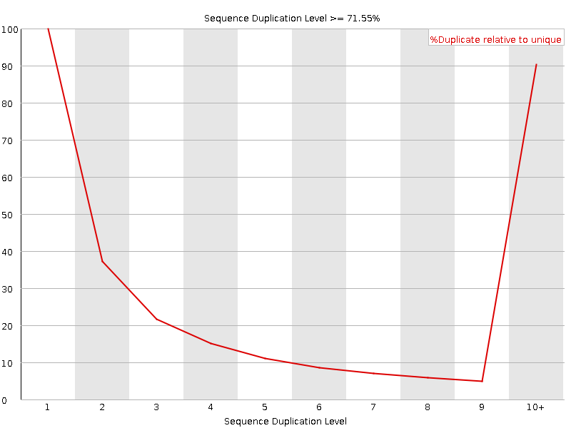
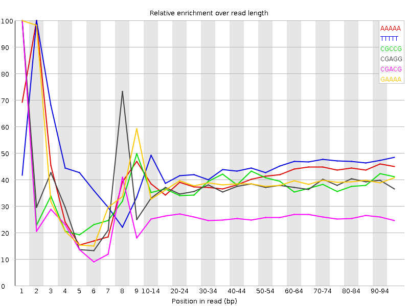

![[OK]](Icons/tick.png) Basic Statistics
Basic Statistics
| Measure | Value |
|---|---|
| Filename | c5.2.fq |
| File type | Conventional base calls |
| Encoding | Sanger / Illumina 1.9 |
| Total Sequences | 26705021 |
| Filtered Sequences | 0 |
| Sequence length | 100 |
| %GC | 38 |
Per base sequence quality

Per sequence quality scores

![[FAIL]](Icons/error.png) Per base sequence content
Per base sequence content

Per base GC content

![[WARN]](Icons/warning.png) Per sequence GC content
Per sequence GC content

Per base N content

Sequence Length Distribution

Sequence Duplication Levels

Overrepresented sequences
No overrepresented sequences
Kmer Content

| Sequence | Count | Obs/Exp Overall | Obs/Exp Max | Max Obs/Exp Position |
|---|---|---|---|---|
| AAAAA | 16807845 | 2.463147 | 5.9846992 | 2 |
| TTTTT | 16973460 | 2.3958912 | 5.3193574 | 2 |
| CGCCG | 1442640 | 2.0716367 | 5.4460626 | 1 |
| CGAGG | 2189620 | 2.02774 | 5.3946815 | 1 |
| CGACG | 2186700 | 1.9994752 | 7.6240373 | 1 |
| GAAAA | 8409295 | 1.9601232 | 5.0239787 | 1 |
| CGGCG | 1339080 | 1.947506 | 5.3395014 | 1 |
| CTTCT | 5109785 | 1.8057992 | 5.005307 | 1 |
| CGCGG | 1194955 | 1.7378962 | 5.2159634 | 1 |
| CTCGA | 2994395 | 1.708575 | 8.549871 | 1 |
| TCGAG | 2930195 | 1.6933169 | 5.2198186 | 7 |
| CGCGA | 1820185 | 1.6643411 | 5.777604 | 1 |
| CGAGA | 2747190 | 1.5995091 | 5.4472694 | 1 |
| CGATC | 2743135 | 1.5652084 | 5.31947 | 4 |
| CTGGA | 2708435 | 1.565165 | 6.4792485 | 1 |
| CGCCA | 1729315 | 1.5612922 | 5.4981375 | 1 |
| ATCGA | 4271975 | 1.5521188 | 5.6411605 | 6 |
| CTTCG | 2685845 | 1.5210714 | 6.285444 | 1 |
| CTCCA | 2697535 | 1.5197611 | 6.399373 | 1 |
| CTTTT | 6801585 | 1.5191194 | 5.954786 | 1 |
| CGAAG | 2576375 | 1.5000547 | 5.3264375 | 1 |
| CTCGT | 2591090 | 1.467409 | 7.161732 | 1 |
| CTCGC | 1618380 | 1.4502212 | 6.4911327 | 1 |
| CTTCA | 3835290 | 1.3655933 | 5.188187 | 1 |
| CTCGG | 1499820 | 1.3611614 | 7.705498 | 1 |
| CGAAA | 3656630 | 1.3385468 | 5.563575 | 1 |
| GAATC | 3527500 | 1.2816318 | 5.270475 | 4 |
| CTTGG | 2177175 | 1.2487594 | 5.723016 | 1 |
| CTTTG | 3404545 | 1.2185479 | 5.066703 | 1 |
| CTTGA | 3329230 | 1.2005595 | 5.2181373 | 1 |